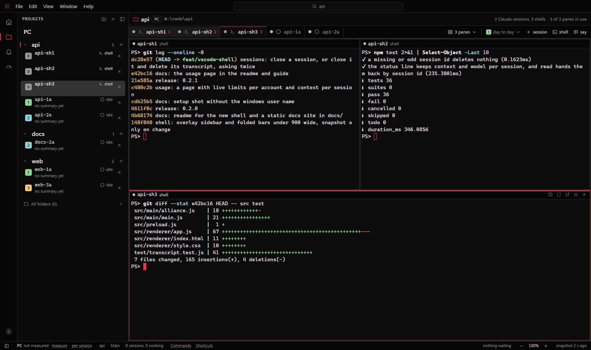
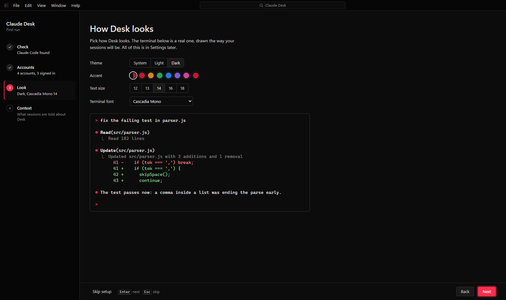
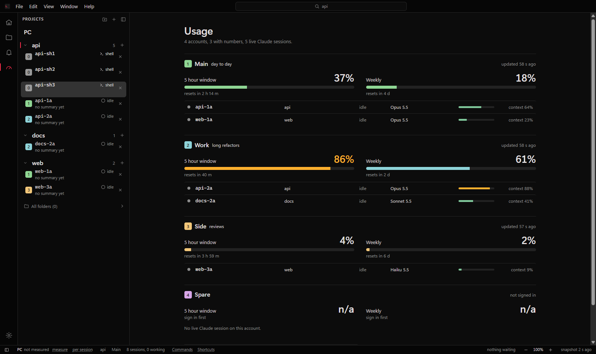
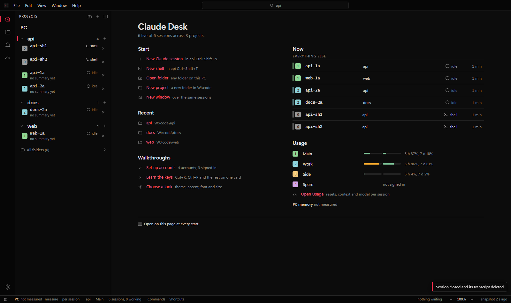
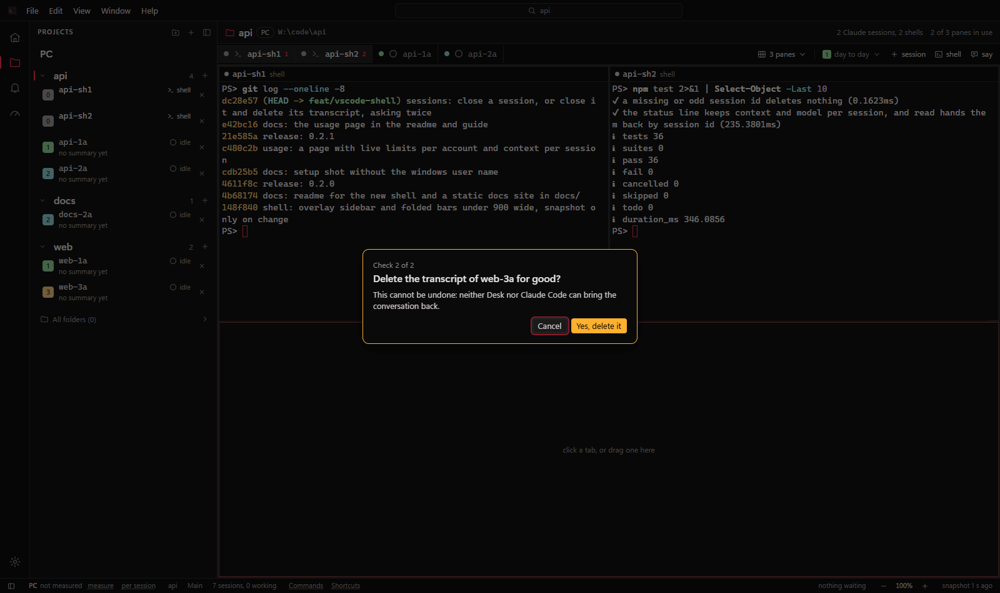

Run many Claude Code sessions side by side.
Claude Desk is a Windows app that puts real Claude Code terminals in tabs and panes, across several Claude accounts, and shows you which ones are waiting for you.
No sound. The three shells are running Desk's own git log, tests and diff.
Panes, tabs and windows
Show one to eight panes at once, in as many windows as you like. Each window keeps its own projects and layout. Move a pane to another window and its process keeps running; the old window marks it "in window 2".

Several Claude accounts
Each account gets its own Claude Code config folder, a name and a colour, so logins never mix. Signing in runs Claude Code's own login. Pick the account when you start a session.
Accounts in the guide.

Usage for every account
The Usage page shows each account's five hour and weekly limits and when they reset, then every live Claude session on it with its model and how full its context is. The numbers come from Claude Code's status line, so reading them costs no tokens and makes no network calls.

What needs you comes first
The Welcome page lists the sessions waiting for you first, with how long they have waited, then the working and finished ones, your recent projects and each account's usage. The bell, the window title and the taskbar flash count the waiting ones too.

Closing asks twice
The power icon on a pane stops the session and asks twice first. Close and delete transcript also removes the conversation file and the folder beside it. The second check starts on Cancel, so pressing Enter twice closes nothing, and the delete will not follow a link out of the account folder.

What Desk leaves alone
- The chat. The terminal is Claude Code itself. Desk starts, shows, stops and resumes it, and does not edit your files or show git.
- Your prompts. Nothing is added unless you turn context on. Off costs 0 tokens; the name line is about 12.
- Your data. No telemetry and no server. Settings and layout stay in a folder on your PC.
- Other platforms. Windows only for now, and the installer is not code signed yet.
Install
You need Windows 10 or 11 and Claude Code, so that claude works in a terminal.
- Download
Claude-Desk-Setup-0.2.2.exefrom the latest release. - Run it. SmartScreen does not know the app yet, so click More info, then Run anyway.
- It installs for your user only, with no admin rights, and keeps itself up to date from GitHub Releases.
From source
Node.js 20 or newer. No compiler is needed.
git clone https://github.com/1oNN/claude_desk.git
cd claude_desk
npm ci
npm startA copy run from source never updates itself; use git pull.